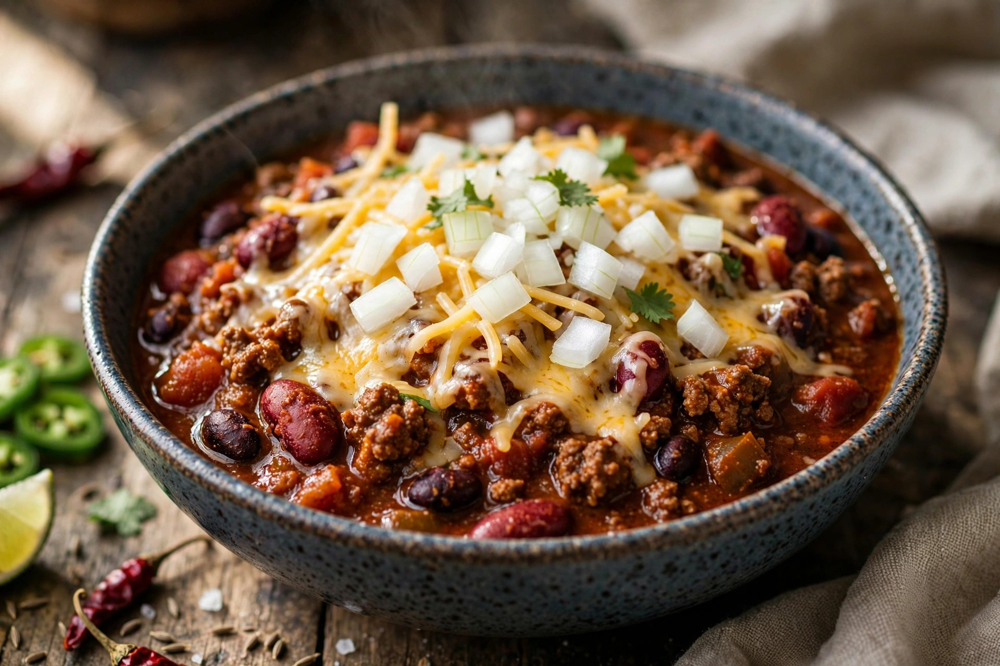

From Wikipedia, the free encyclopedia
| Chili con carne | |
|---|---|
 | |
| Type | Stew |
| Place of origin | Texas, United States |
| Main ingredients | Beef, chili peppers, cumin; often tomatoes and beans |
Chili con carne (Spanish for "chili with meat"), usually known simply as chili, is a spicy stew of chili peppers, meat (typically beef), tomatoes, and seasonings such as cumin and garlic, with kidney beans included in many versions. It is the official dish of the U.S. state of Texas and an icon of Tex-Mex cuisine.
Chili developed in the 19th century in San Antonio, Texas, where "chili queens" sold bowls of stew from carts in public squares. Working-class origins are reflected in its economical use of tough cuts of meat stewed tender. It was popularised nationally at the 1893 World's Columbian Exposition in Chicago and became a staple of diners, canteens, and cook-off competitions.
Purists — particularly in Texas — insist authentic chili contains no beans ("chili con carne" means meat only), while many other regional styles, including Cincinnati chili (served over spaghetti) and Midwestern versions, include beans and tomatoes. Chili cook-offs such as the Terlingua championship enforce strict no-bean rules. Vegetarian versions substitute beans, lentils, or textured vegetable protein for the meat.